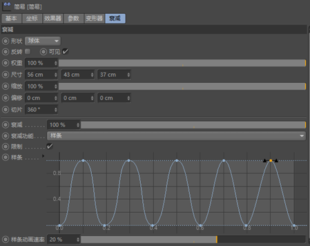

1. 概述
我们生活在广州，那么广州给我们带来的映像是什么呢？结合三维建模的特性，我们决定通过描述广州特有的建筑来阐述广州带给我们的记忆。视频主要是将广州最有名的建筑运用小动画串联起来，将广州微缩成一个个小小的建筑，展现我们主题的同时，增加了视频的趣味性，也表达了我们对广州的爱。
2. 脚本
| 建筑 | 镜头 | 入画方式 | 出画方式 |
|---|---|---|---|
| 中信大厦 | 固定全景 | 掉落入画 | 快速旋转 |
| 广州塔 | 固定全景+摇 | 高速旋转构造 | 拆分挤压 |
| 中山纪念堂 | 固定全景+摇 | 挤压构造 | 拆分变成小球 |
| 体育中心 | 摇+推进 | 碎块重组 | 化成水融化 |
| 圆大厦 | 固定全景 | 缩放构造升起 | 移动 |
| 琶洲展馆 | 固定全景+摇 | 直接入画 | 直接出画 |
| 珠江啤酒博物馆 | 摇+固定全景 | 啤酒罐掉落 | 变形 |
| 广东省博物馆 | 固定全景 | 正方体变形 | 旋转破碎 |
| 五羊石像 | 固定全景 | 破碎后出现 | 破碎 |
3. 设计
我们场景中每个建筑的颜色都是根据画面上的颜色做参考来进行配比的。
4. 灯光与场景
灯光使用GSG Light Kit的Softbox，选用三盏灯分别从三个方向进行打光，参数进行如下设置：

场景使用一个L形曲面，避免面与面之间的棱角过于锋利:
5. 建模
为了展现广州的建筑特色，我们选取了9个比较有代表性的广州建筑，利用网上找到的图片，在3dsmax里面进行建模，细化，导出FBX，再将模型导入到c4d中进行材质编辑与渲染。
其中五羊石像为了更好的导入C4D进行后续的动画编辑在ZBrush进行了减面操作以优化动画编辑处理，将模型由九十万多个面减少为十八万个面。
6. 动画特效
每一栋建筑与建筑之间我们都会用一些动效和多面体将他们联系起来，尽量展现了更多样的形式还有奇思妙想。
特效动画部分是在c4d里完成，经过在3dMax与C4D效果的对比与我们的再三考虑，我们发现，利用c4d的效果去完成我们的作品，在渲染的画面以及基调上会更加适合，从而使我们的作品更加完善。
6.1 预处理
在对模型进行动画编辑前首先对需要进行分裂与泰森分裂的模型进行连接（焊接）处理，并将平滑着色模式选为最高。
6.2 中信大厦
由于对中信大厦进行模拟动力学处理无法达到预期动画效果，因此对中信大厦进行模拟动力学轨迹关键帧，实现轨迹动画。在变化为广州塔的过程首先使用普通关键帧动画，在关键变化过程使用分裂、推散、简易与延迟效果器实现复合效果。
6.3 广州塔
广州塔的动画与变换为中山纪念堂的过程同样使用了多个效果器进行复合效果处理，其中利用时间效果器的特征实现独立旋转效果。
6.4 中山纪念堂
在变为小球后启用小球的刚体动力学属性，并设置y向初速度实现小球向上抛的效果，在小球第二次落地后启用小球的泰森分裂效果，并另外设置刚性小球与该小球产生碰撞使小球破碎落地。

在泰森分裂中优化并关闭空洞，使小球破碎后的具有实心效果，同时设置其为空心对象以减少计算量。打开小球分裂的内表面与外表面选集并使用不同材质，增强小球破碎的真实感。
6.5 广州体育中心
对小球碎片进行适当剪辑处理实现碎片汇聚效果，碎片变换为体育中心同样采用多个效果器的复合效果。

使用大小不同的两个小球实现类似流体分离的效果，提高融球的细分程度以优化平滑效果。设置小球的动力学初速度，实现小球向上跳动的效果。

在小球再次下落融合后设置体育中心的涟漪效果，实现涟漪效果时首先尝试使用公式效果器，设置公式为Sin((u+t)*2.0*PI)*0.2，但是效果不是很好于是更换为简易效果器，在效果器的衰减选项中设置其形状为球体，并绘制如图所示样条曲线，将其样条动画速率设置为20%以达到涟漪动画效果。体育中心变换到圆大厦使用多个效果器复合与关键帧动画完成过度。
6.6 广州圆大厦
对圆大厦的旋转速度分别设置不同的变化速度以达到非线性变化旋转效果，更贴合物体的真实转动。
接着对圆大厦设置轨迹，实现圆大厦的出画。
6.7 琶洲展馆

利用轨迹实现金币（圆大厦）的移动，通过关键帧的形式“打开”琶洲展馆顶部，启用圆大厦的动力学标签实现自由落体效果。
6.8 珠江啤酒博物馆

创建基本几何体实现啤酒馆外圈的动力学属性，设置啤酒桶的动力学标签并对其进行烘培。
调整啤酒桶的轨迹使其更符合手拿起的动作。啤酒馆变换为立方体同样采用多个效果器复合。通过融球效果改变立方体的颜色。
6.9 广东省博物馆
利用关键帧动画实现出现纹路，旋转效果。博物馆变化为立方体同样采用多个效果器复合实现。使用泰森分裂破碎立方体。
6.9 五羊石像
设置多个关键帧动画实现石像活动效果。

对五羊石像进行泰森分裂，设置点数量为2000，同样进行封闭空洞与空心处理，设置内外表面选集以实现内外不同材质。
使用多个效果器实现石像炸开碎片上升构成五羊粒子群，并消失拼凑出标题的效果。其中简易效果器控制碎片的移动与大小，随机产生随机位移、旋转效果避免整体效果过于单一，时间效果器实现碎片顺时针上旋效果，推散效果器实现碎片炸开效果。
7. 后期剪辑
剪辑部分是在pr里完成，将画面更加顺畅的拼接起来，加入bgm以及效果音。手部动作是通过绿幕以及微单拍摄，通过ae叠加进去的，使我们的画面更加有微缩感。